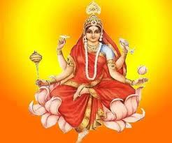

Durga Puja
Day 9

Siddhidhatri is the ninth form of the Goddess Durga or Parvati , the meaning of her name is as follows: Siddhi means supernatural power or
meditative ability, and Dhatri means giver or awarder. She is worshipped on the ninth day of Navaratri (nine nights of Navadurga);
she fulfills all the divine aspirations and completes the mundane .
Affiliation: Avatar of Parvati
Mantra: सिद्धगन्धर्वयक्षाघैरसुरैरमरैरपि। सेव्यमाना सदा भूयात् सिद्धिदा सिद्धिदायिनी॥
Weapon: Mace, Chakra, Shankha, lotus in which 8 siddhis are absorbed
Mount: lion or fully bloomed lotus
Consort: Shiva